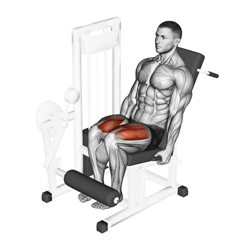

| Cadeira Extensora |
|  |
O principal movimento articular realizado na cadeira extensora é a extensão de joelho, portanto o quadríceps (vasto lateral, vasto medial, vasto intermédio e reto femoral) são os principais músculos trabalhados durante o exercício. [ fonte ] |
| Supino Vertical |
| O supino vertical é um exercício popular e eficaz para desenvolver força, tamanho e definição nos músculos da parte superior do corpo. Ao usar uma máquina de peso guiada, este exercício oferece uma maneira acessível e controlada de direcionar os músculos do peito, ombros e tríceps. [ fonte ] |
 |
| Remada Baixa de Triângulo |
 |
A Remada Baixa é um exercício de máquina para costas feito sentado no banco usando a barra triângulo. A Remada trabalha inúmeros músculos como o lombar, latíssimo do dorso, trapézio, deltóide posterior e até mesmo o braquiorradial. [ fonte ] |